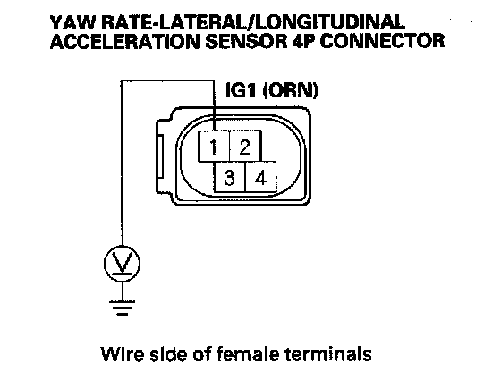

DTC 73
DTC 73: Yaw Rate Sensor (Power Supply)1. Turn the ignition switch OFF.
2. Disconnect the yaw rate-lateral/longitudinal acceleration sensor 4P connector.
3. Turn the ignition switch ON (II).
4. Measure the voltage between body ground and yaw rate lateral/longitudinal acceleration sensor 4P connector terminal No. 1.

Is there battery voltage?
YES-Replace the yaw rate-lateral/longitudinal acceleration sensor.
NO-Repair open in the wire between the No. 29 (10 A) fuse in the under-dash fuse/relay box and the yaw rate lateral/longitudinal acceleration sensor.